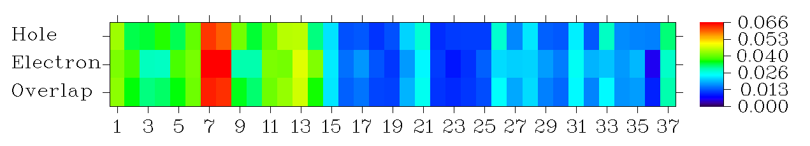

电子激发分析（Electron excitation analysis）（18）¶
Multiwfn manual, p.257–304.英文原文见同名 English 章节。 Images:
../imgs/.
由当前文件夹中名为 basin.cub 的 cube 文件定义的盆，其中格点值对应盆序号。该选项旨在基于 AIM 划分获得 ELF 键盆（或其它盆）布居的原子贡献。例子请查 4.17.7 节。
-
10 算高 ELF 定域域布居与体积（HELP, HELV）（10 Calculate high ELF localization domain population and volume (HELP, HELV)）：该选项用于算 HELP 与 HELV，它们定义于 ChemPhysChem, 14, 3714 (2013) 以表征孤对电子。该选项只在用于划分盆的实空间函数为 ELF 时出现。用该选项算 HELP 与 HELV 的例子见 4.17.8 节。
-
11 算各盆贡献的轨道成分（11 Calculate orbital compositions contributed by various basins）：用该选项，可算 AIM 盆或其它盆（如 ELF 盆）对特定轨道的贡献。例子见 4.8.6 节。
-
12 指定 ELF 盆标签（12 Assign ELF basin labels）：该选项用于在用于产生盆的实空间函数为 ELF 时自动指定全部盆的标签，盆体积与布居也一并打印。指定的标签例子：C(F2), V(O3), V(S5,F7), V(Li1,Li2,Li3)。标签输出两次，第一次按盆序号输出数据，第二次按排序后的盆标签输出数据。例子见 4.17.2 节。
自动指定 ELF 盆标签的算法细节：先指定 core 盆。若某 ELF 吸引子与某核的距离小于阈值，则相应盆指定为 core 型。阈值距离内置且对不同元素不同。对某元素，阈值定为基于高质量原子基态波函数的球平均 ELF 径向曲线的最外面极小的位置。内置阈值已对 H~Lr 确定，因此若体系含重于 Lr 的元素则该选项不能用，即须通过可视化吸引子位置和/或盆的空间范围手动确定标签。
之后，其它盆都标为 valence 型。若某吸引子的任一格点与某 core 盆的格点相邻，则该 core 盆对应的原子加入该吸引子的成员列表。假设最终某吸引子的成员为 C1 与 O2，则其标签为 V(C1,O2)。H 与 Ne 相对特殊，若某吸引子与 H 或 Ne 核的距离小于 0.2 Bohr，则该原子加入成员列表。
注意对用赝势的元素不能正确指定盆标签，因为此时 core 盆不能指定。
对选项 3、4、5、7、8，若所用输入文件不含 GTF 信息（如输入文件用 .cub 文件并直接用其携带的格点数据产生盆），则 Multiwfn 将提示输入新文件，该文件应含当前体系的 GTF 信息，例如可用 mwfn/.wfn/.wfx/.fch/.molden/.gms 作输入。
本模块的很多例子见 4.18 节。所需信息：GTFs 或从外部文件载入的格点数据（如 .cub）、原子坐标
3.21 电子激发分析（Electron excitation analysis）（18）¶
3.21.A 电子激发分析模块的基本信息（Basic information about electron excitation analysis module）¶
3.21.A.1 概述（Overview）
主功能 18 含很多旨在做电子激发分析的子功能，即以各种方式表征电子激发。该类全部功能完全支持
单参考方法（即产生激发态波函数的参考波函数为单 Slater 行列式），包括 TDDFT、TDA-DFT、CIS 与 TDHF，而 ZINDO 也被跃迁密度矩阵绘制功能支持。其它激发态问题的方法如 EOM-CCSD、LR-CC2/3、CASSCF、CASPT2、MRCI 形式上不支持。其中一些电子激发分析功能的例子见 4.18 节。
Multiwfn 的各类电子激发分析完全支持闭壳层与开壳层体系。
3.21.A.2 单参考方法的基本知识（Basic knowledge about single-reference methods）
CIS 与 TDA-DFT 方法的激发态波函数（Ψexc）可表示为
其中 i 与 a 分别遍历全部占据与全部虚 MO，下同。Φ𝑖 𝑎 为把电子从原来占据的 MO i 移到虚 MO a 对应的组态波函数。w 称为组态系数。CIS 或 TDA-DFT 框架下的电子激发因此可表示为轨道对跃迁的线性组合。权重系数 w 满足该归一化条件：
显然，i→a 轨道对跃迁对电子激发的贡献为 100% × (𝑤𝑖 𝑎)2。而对 TDHF 与 TDDFT，激发态波函数还含所谓退激发部分：
其中 w 与 w' 分别对应激发与退激发的组态系数。此时，归一化条件变为：
CIS/TDHF 与 TDA-DFT/TDDFT 用的 MO 分别由当前体系基态的 HF 与 DFT 计算产生。由占据 MO 组成的 Slater 行列式，即基态波函数，称为参考态。若参考
态为闭壳层，则 α 与 β MO 完全匹配，从而 β→β 轨道跃迁与 α→α 轨道跃迁一一对应；此时只记录一套轨道跃迁，相应地，组态系数归一化到 0.5 而非 1。
3.21.A.3 输入文件（Input files）
几乎全部电子激发分析功能的输入文件基本相同，子功能 3（基于密度差格点数据分析电荷转移）除外。需两种输入文件：
(1) 含基函数与分子轨道信息的文件（轨道
参考态的波函数）
激发态计算（如 TDDFT）产生的 mwfn、.fch/.fchk、.molden、.gms 文件可直接用。该文件应在 Multiwfn 启动时载入。例如，可用 Gaussian 的 TDDFT 任务的 .chk 文件经 formchk 转的 .fch 文件，再如，可用 ORCA 的 TDDFT 任务的 .gbw 文件经 orca_2mkl 转的 .molden.input 文件。
(2) 含激发态组态系数的文件。该类文件的路径应在进入相应分析功能时输入，Multiwfn 将从该文件载入组态系数。有以下几种情形，如下：
-
Gaussian 用户：CIS、TDHF、TDDFT、TDA-DFT 任务的输出文件（.out 或 .log）可用。单点与优化任务都支持；对后者，Multiwfn 在最终几何分析电子激发。由于默认 Gaussian 只输出绝对值大于 0.1 的组态系数，为达到可接受的精度，route 段须加 IOp(9/40=4) 关键词以打印幅度大于 0.0001 的全部组态系数（若发现 Multiwfn 中计算太贵，改用 IOp(9/40=3) 一般也可接受）。隐式溶剂化模型，包括溶剂响应跃迁的外迭代（态特定）处理，完全兼容。
-
用 CIS 或 TDA-DFT 的 ORCA 用户：CIS 或 TDA-DFT 任务的输出文件可用。注意 %cis 或 %tddft 中应用 TPrint 关键词，否则只打印极少组态系数。TPrint x 意为输出对激发态贡献大于 x*100% 的组态。通常建议用 TPrint 1E-8。由于贡献按组态系数的平方算，TPrint 1E-8 就是输出系数绝对值大于 1E-4 的组态，效果与 Gaussian 的 IOp(9/40=4) 相同。下面是输入例子：
! PBE0 def2-SVP
%tddft
nroots 8
tprint 1E-8
end
ORCA 的自旋翻转 TDDFT 输出文件也支持，只需在 %tddft 域加 SF TRUE
并设参考态的自旋多重度 ≥ 3。注意只有少数功能形式上支持，包括产生激发态的自然轨道、空穴-电子分析及相关分析，其它功能未经测试。特别地，直接基于跃迁密度矩阵的全部分析（包括 NTO 分析）此时不支持。
- 用 TDDFT 的 ORCA 用户：因输出文件中没有显式记录激发与退激发组态的系数，此时不仅需要 TDDFT 输出文件，还需要记录全部组态系数的 json 文件。跑完名为如 TDDFT.inp 的典型 TDDFT 输入文件后，当前文件夹有 TDDFT.gbw。再创建名为 TDDFT.json.conf 的文本文件，内容如下。
{
"CIS": true,
"CISNRoots": true
}
再跑 orca_2json TDDFT.gbw，当前文件夹得到 TDDFT.json。之后，当 Multiwfn 在分析中试图载入你输入的 TDDFT.out 时，若有同名同文件夹但后缀为 .json 的文件（即 TDDFT.json），激发与退激发组态将自动从 TDDFT.json 而非载入。若仍困惑，请读笔者的博客 http://sobereva.com/758（中文），其中描述了如何准备文件并结合 ORCA 的 TDDFT 计算用 Multiwfn 做典型分析。
- 用 sTDA 或 sTDDFT 的 ORCA 用户：它们分别为常规 TDA 与 TDDFT 的近似，其输出文件可用。在 ORCA 中，它们的计算基于 DFT MO；DFT 单点任务完成后，sTDA/sTDDFT 以可忽略的代价算激发态。做这些计算，用如下关键词（细节见 ORCA 手册）
! wB97X-D3 def2-SV(P) def2/J RIJCOSX
%tddft
Mode sTDDFT //The sTDDFT may also be changed to sTDA
Ethresh 7.0
PThresh 1e-4
PTLimit 30
maxcore 6000
end
重要提示，计算中只打印三个最大的组态系数（不幸的是，TPrint 对 sTDA/sTDDFT 计算无效），因此组态系数的归一化条件常明显违反，此时分析结果不可靠乃至完全误导！所以，请注意载入所选激发态后屏幕显示的 "Deviation to expected normalization value"。
-
BDF 用户：BDF 程序 TDDFT 任务的输出文件可用。
-
CP2K 用户：CP2K 的周期性 TDDFT（含/不含 sTDA 核）任务支持。目前，只有空穴-电子分析、NTO 分析、“产生特定激发态的自然轨道”、“检查、修改并导出某激发的组态系数”与“打印全部激发态中的主要 MO 跃迁”形式上支持，其它分析可能行也可能不行（至少笔者未测试）。
启动 Multiwfn 后，应载入含全部虚轨道与胞信息的 .molden 文件。再进入分析模块后，应载入 CP2K 的输出文件。
值得注意的是，用 Multiwfn 准备 CP2K 的 TDDFT 任务输入文件很容易。启动 Multiwfn 后，先载入结构文件（对晶体常用 .cif，细节见 2.9.3 节），再输入 cp2k 与要导出的输入文件的路径。之后，可先进入选项 -11 再进子选项 19 以在需要时把当前胞扩展为超胞。再回到创建 CP2K 输入文件的界面，选选项 15 以开启 TDDFT 计算，再输入 y 以允许 CP2K 产生含全部轨道的 .molden 文件并指定求解并记录在 .molden 文件中的虚轨道数。最后选选项 0 以产生 CP2K 输入文件。再用 CP2K 跑该输入文件，算完后手动把胞信息
插入 .molden 文件（如 2.9.2.1 节所述）。之后 .molden 文件与输出文件可用于电子激发分析。
注意 .molden 文件中记录的虚轨道应覆盖打印的组态涉及的全部虚轨道。若不知道应算多少虚轨道，设为很大值以求解并记录全部虚轨道，但此时 .molden 文件可能很大。也可先做一次 TDDFT，再检查打印的组态找出最高的虚轨道，再在输入文件中适当设置求解的虚轨道数并重做单点计算以产生 .molden 文件。
- 一般情形：也可用纯文本文件作输入文件。跃迁信息的格式须与 Gaussian 输出完全相同，例如：（// 及其后的文字不应出现在你的文件中）
Excited State 1 1 5.7945 // Label, index, multiplicity and excitation energy (eV)
5 -> 6 0.70642 // MO pairs and configuration coefficients
// Use a blank line to separate each excited state
Excited State 2 1 7.8943
5 -> 7 0.63860
5 -> 8 0.30006
Excited State 3 1 7.8943
5 -> 7 -0.30006
5 -> 8 0.63860
4 <- 8 0.01000
非限制 TDDFT 计算的例子如下。注意自旋多重度设为 0，意为未定义，因为这种计算产生的激发态不是纯自旋态。
Excited State 1 0 2.07774
600B -> 601B -0.676085
598A -> 602A 0.454805
600A -> 603A 0.416875
...ignored
Excited State 2 0 2.07792
599B -> 601B 0.561757
598A -> 601A 0.496762
600B -> 603B 0.468381
...ignored
显然，上述两类文件须对应同样的几何与同样的计算级别。例如，若 .fch 中的 MO 在 B3LYP/6-31G 级别产生而 Gaussian 输出文件对应 PBE0/6-31G 级别的 TDDFT 任务，分析结果完全无意义。
注 1：对闭壳层参考情形，纯文本文件中的系数应遵循 Gaussian 的约定，即全部系数的平方和为 0.5（而非归一到 1.0）。
注 2：提供给 Multiwfn 的纯文本文件中的 MO 序号应从 1 开始。但在 ORCA 等程序中 MO 序号从 0 开始，所以其用户在准备纯文本文件时需手动把 MO 序号加一。
- 对 GAMESS-US 与 Firefly 用户的特殊情形：若你是 Firefly 或 GAMESS-US 程序的用户，做电子激发分析不需要如上分别提供两类文件。若用于 Multiwfn 的输入文件为后缀 .gms 的 TDDFT 输出文件，Multiwfn 启动时不仅从该文件载入基函数与分子轨道信息，做电子激发分析时还载入激发态的组态系数。"examples\excit\" 文件夹中的 H2CO_TDDFT_Firefly.gms 与 H2CO_TDDFT_GAMESS.gms 分别为 Firefly 与 GAMESS-US 的 TDDFT 输出文件例子。
对 Firefly 用户，应调小 $TDDFT 中的 "PRTTOL" 参数以打印更多组态系数。
对 GAMESS-US，没有控制组态系数打印阈值的选项，因此一些分析结果可能不太准，因为一些有不可忽略贡献的组态可能被忽略。另外，Multiwfn 不支持 GAMESS-US 的 CIS 任务。
不支持 GAMESS-US 与 Firefly 的激发态优化与频率任务的输出文件。
3.21.0 检查、修改并导出某激发的组态系数（Check, modify and export configuration coefficients of an¶
excitation (-1)）（接上）¶
该功能允许检查、修改并导出组态系数。该功能所需的输入文件已在 3.21 节开头详细描述，即 Multiwfn 启动时应载入含基函数信息的文件，再载入含激发态组态系数的文件。屏幕打印全部识别的激发态的汇总，应选其一，该电子激发涉及的轨道对的组态系数将被载入。之后，对激发贡献绝对值最大的至多 10 个轨道对自动显示。再在新出现的菜单中，可见以下选项：
1 设置某轨道对的系数（1 Set coefficient of an orbital pair）：用该选项可以输入的值替换所载入的某轨道对的组态系数。
2 设置特定范围轨道对的系数（2 Set coefficient for specific range of orbital pairs）：该选项用于批量替换所载入的组态系数为输入值。应输入轨道跃迁对应的占据 MO 与虚 MO 的序号范围。
手动用上述两选项修改系数后，为使修改影响后续电子激发分析，应用选项 -3 把修改后的系数导出为纯文本文件，再把该文件用作电子激发分析的第二类输入文件。
-1 恢复全部轨道对的原始系数（-1 Retrieve original coefficient of all orbital pairs）：若组态系数已被上述两选项手动修改，可选该选项把系数恢复为原始载入值。
-2 打印一些轨道对的系数（及对激发的贡献）（-2 Print coefficient (and contribution to excitation) of some orbital pairs）：用该选项可打印绝对值大于特定值的组态系数，同时一并显示相应的对电子激发的贡献。经该
选项可很容易找出哪个轨道对跃迁对电子激发有关键贡献。
-3 把当前激发信息导出为纯文本文件（-3 Export current excitation information to a plain text file）：当前所选激发态的基本信息与组态系数可导出到指定的纯文本文件。该文件可再用作 Multiwfn 各种电子激发分析功能（如空穴-电子分析、NTO 分析）的第二类输入文件，分析结果将对应修改后的组态系数。
显然，若把一些轨道对的系数设为零，则它们对所研究量的贡献被完全忽略；而若除特定轨道对外清掉全部系数，则所得量只揭示该轨道跃迁的特征。
4.18.10 节的例子用了该功能。¶
3.21.1 分析并可视化空穴&电子分布、跃迁密度与跃迁电/磁偶极矩密度（Analyze and visualize hole&electron distribution, transition¶
density, and transition electric/magnetic dipole moment density (1)）（接上）¶
该非常强大的模块用于分析并可视化空穴-电子分布、跃迁密度与跃迁电/磁偶极矩密度。而且，空穴与电子可分解为轨道对贡献以及原子与片段贡献；进而，原子/片段贡献可直接绘制为热图以直观查看。
3.21.1.1 理论（Theory）¶
该模块涉及很多知识点，下面先描述。
理论 1：空穴与电子的实空间表示（Theory 1: Real space representation of hole and electron） 单电子激发过程可描述为“电子离开空穴去往电子”，“空穴”与“电子”可以不同方式定义。若某激发可完美
描述为 HOMO→LUMO 跃迁，则空穴与电子可简单地分别用 HOMO 与 LUMO 表示。但在多数实际情况中，单轨道对表示不合适，激发须表示为带相应权重系数的多 MO 对跃迁。
没有单主导 MO 对跃迁时如何表示空穴与电子分布？一种方式是用自然跃迁轨道（NTO）分析，如 3.21.6 节介绍。不幸的是，很多情形即使 MO 已变换为 NTO，仍没有单 NTO 对有主导贡献。空穴与电子的最好表示应为本节介绍的，思想最初由笔者与合作者 Cheng Zhong 于 2013 年提出。虽然详细介绍该方法的论文尚未发表，若你的研究涉及该理论，请引用笔者的工作：Carbon, 165, 461-467 (2020) DOI: 10.1016/j.carbon.2020.05.023，其中用了空穴-电子分析并简述。
可证空穴与电子的密度分布可完美定义为
注意此处用的记号：
其中 φ 表示 MO 波函数。"loc" 与 "cross" 分别表示局域项与交叉项对空穴与电子分布的贡献。注意上式给的空穴与电子定义为密度形式而非波函数形式，从而空穴与电子没有相位（若确实需要空穴与电子的相位信息，应求助于 NTO 分析，见 3.21.6 节）。
由于 MO 的正交归一以及全部组态系数的平方和为 1.0，显然
这是任何合理的空穴与电子分布定义都应满足的重要性质，它表明一个电子被激发。
空穴与电子分布间的重叠函数可定义为
即处处取 ρhole 与 ρele 的最小值。衡量重叠的另一函数为
显然 Sr 总等于或大于 Sm。两种定义都合理，但笔者倾向用 Sr，因为其图形效果更好且数学意义更明确。
激发态与基态间的电荷密度差（CDD）可很容易求为
注：注意若你是 Gaussian 用户，这样算的 Δρ 与经由激发态密度减基态密度产生的 Δρ 明显不同，除非产生激发态 .wfn/wfx 文件时指定了关键词 density=rhoci。因为默认 Gaussian 导出到 .wfn/wfx 文件的激发态密度为弛豫密度而非未弛豫密度（后者直接由 MO 与激发态组态系数构建）。换
言之，未弛豫激发态密度可简单写为 𝜌excited(𝐫) = 𝜌ground(𝐫) −𝜌hole(𝐫) + 𝜌ele(𝐫)，而推导弛豫激发态密度需用很复杂的 "Z-vector" 方法。
推广后，上述空穴与电子的定义也可用于 TDHF 与 TDDFT 情形，其中须考虑退激发。广义局域项为
其中 ρi=|φi|2 表示轨道 i 的电子密度，w' 表示退激发的组态系数。广义交叉项为
理论 2：MO、基函数、原子与片段对空穴与电子分布的贡献（Theory 2: Contribution of MOs, basis functions, atoms and fragments to hole and electron distributions）
为研究哪些 MO 对空穴与电子有显著贡献，笔者把占据 MO 对空穴的贡献与虚 MO 对电子的贡献定义如下
以下归一化条件显然成立：
某原子对空穴/电子的贡献可用 Hirshfeld、Hirshfeld-I、Becke 等实空间划分很容易求得。例如，用 Hirshfeld 划分求原子 A 对空穴的贡献：
Hirsh 为 Hirshfeld 划分下原子 A 的权重函数，细节见 3.9.1 节。其中 𝑤𝐴
类 Mulliken 划分也可能，工作方程推导如下。考虑空穴的归一化条件（为简单暂时忽略退激发部分）
其中 χ 表示基函数，S 与 C 分别为重叠矩阵与系数矩阵。若
则可把原子 A 对空穴的贡献定义为下式
上述处理可类似用于空穴的退激发部分以及电子。实际用于求原子对空穴与电子贡献的工作方程为
某基函数 μ 对空穴与电子的贡献可定义为
为显著节省计算时间，Multiwfn 忽略相应两组态系数乘积幅度小于 0.001 的全部项。该技巧带来的精度损失可忽略。
对类 Mulliken 与 Hirshfeld 划分，片段对空穴与电子的贡献可简单地由原子贡献求和得到：
进而，笔者把原子与片段对电荷密度差（原子与片段的电子布居变化）的贡献定义为
原子与片段空间中空穴与电子的重叠定义为其贡献的几何
平均：
注意该形式的重叠不可加，即 ABBAΘ≠Θ+Θ。ovlpovlpovlp
类 Mulliken 划分对多数情形合理，但与弥散函数不兼容。该划分众所周知的另一缺点是某些情形一些原子贡献可能为小的负值，显然此时相应原子空间中空穴与电子的重叠不能求，所以 Multiwfn 自动把重叠值设为零。显然，当必须用弥散函数（如阴离子体系、Rydberg 激发态），或已观察到明显的对空穴或电子的负原子贡献时，须换为 Hirshfeld 划分，它更稳健但计算代价更高。
类 Mulliken 与 Hirshfeld 划分可在空穴-电子分析模块中直接选择。由于 Multiwfn 极其灵活，也可用其它方式确定原子对空穴与电子的贡献，如 Becke 与 Hirshfeld-I 划分。但须手动求得。例如，若要对空穴与电子用 Becke 划分，应先导出空穴或电子的 cube 文件，再把 settings.ini 中的 "iuserfunc" 设为 -1（此时自定义函数对应于基于格点数据的插值函数），再把空穴或电子 cube 文件载入 Multiwfn，用主功能 15 的子功能 1 在每个 Becke 原子模糊空间中积分“自定义函数”。注意若在主功能 15 中，先选选项 -4 定义片段再用子功能 1 积分自定义函数，则全部原子的结果之和对应片段贡献。
理论 3：全空间中空穴与电子分布的定量表征（Theory 3: Quantitative characterization of hole and electron distribution in the whole space）
空穴与电子的总体分布可用以下方式定量表征，它们对识别电子激发类型很有用。
为表征空穴与电子的重叠程度，Sm 指数与 Sr 指数定义如下（Sr 必等于或大于 Sm 指数）
质心可算以揭示空穴与电子分布最有代表性的位置。例如，电子质心的 X 坐标写为
其中 x 为位置矢量 r 的 X 分量。
X/Y/Z 的电荷转移（CT）长度可用相应方向上空穴与电子质心间的距离衡量：
xeleholeyeleholezeleholeDXXDYYDZZ=−=−=−
CT 长度的总幅度称为 D 指数：
值得注意的是，激发态相对基态的偶极矩变化（对应未弛豫密度）在 X、Y、Z 可简单算为
空穴与电子的 RMSD 可用于表征其空间分布的 extent。例如，空穴 RMSD 的 X 分量表为
|σhole| 与 |σele| 分别称为 σhole 与 σele 指数，它们分别衡量空穴与电子的总体 RMSD。
X/Y/Z 方向上电子与空穴 RMSD 的差可用
衡量 Hλ 衡量 X/Y/Z 方向上空穴与电子分布空间扩展的平均程度，HCT 为 CT 方向上的，H 指数为总体度量
H CTCT ·= || uH
H 2/|)||(|index += σσ holeele
其中 uCT 为 CT 方向的单位矢量，可用空穴与电子的质心直接导出。
t 指数旨在衡量 CT 方向上空穴与电子的分离程度：
CTindexindexHDt−= 若 t 指数<0，意味着空穴与电子没有因 CT 而实质分离。空穴与电子分布的明显分离必对应明显为正的 t 指数。
空穴离域指数（HDI）与电子离域指数（EDI）定义如下
发现 HDI（EDI）越小，空穴（电子）的空间离域越大；换
言之，在整个体系中分布越均匀。HDI 与 EDI 在
定量空间分布的广度上很有用（虽然 |σhole| 与 |σele| 也能揭示这点，但空穴或电子集中在多处时它们不合适）。
空穴与电子分布中常有很多节点或复杂波动。为使空穴与电子的直观研究更容易，Chole 与 Cele 函数定义如下。Chole 与 Cele 的函数行为类似 Gaussian 函数，它们是高度光滑的函数，值从空穴/电子的质心渐近趋于零。
引入因子 A 以使 Chole 与 Cele 归一。
事实上，上文引入的 RMSD、Chole、Cele、H 与 t 指数的定义受 J. Chem. Theory Comput., 7, 2498 (2011) 启发，这些量最初用于基于密度差分析电子激发，但笔者发现它们在空穴-电子分析框架下都很好用。另注意引入空穴-电子分析框架时这些指数的许多细节已修改。
上文定义的定量指数可用于区分电子激发类型。笔者的经验规则总结如下，应适用于多数情形。
表中涉及三种激发：
-
局域激发（LE）：空穴与电子占据相似的空间区域。
-
电荷转移激发（CT）：空穴与电子的空间分离大，导致电荷密度的明显位移。CT 可为单向或多向（中心对称 CT 为后者的特殊情形）。
-
Rydberg 激发：电子主要由很弥散的 MO 组成，因此电子与空穴的重叠必小。这类激发一般不导致突出的长程电荷密度位移。
理论 4：跃迁密度矩阵与跃迁密度（Theory 4: Transition density matrix and transition density） N 电子体系激发态与基态间的（单电子、无自旋）跃迁密度矩阵在实空间表示下定义如下（假设实型波函数，故略去复共轭符号）
| 激发类型 | D | Sᵣ | t | ∆σ |
|---|---|---|---|---|
| LE | 小 | 中 ~ 大 | <0 | 小 |
| 单向 CT | 大 | ? | ? | ? |
| 中心对称 CT | 小 | ? | <0 | 大 |
| Rydberg | 小 | 小 | <0 | 大 |
其中 Φ0 为基态波函数的 Slater 行列式。x 为自旋空间坐标，σ 表示自旋坐标。T 称为矩阵因为它有两个连续序号。
对单参考方法产生的激发态波函数，展开 Ψexc 并用 Slater-Condon 规则后，可很容易证 T 可显式写为
若只取跃迁密度矩阵的对角元，则得跃迁密度
T(r) 可作为普通实空间函数研究，如可视化为等值面
图。假设只有一对主导轨道跃迁，如 HOMO→LUMO，则 T(r) 就是 φHOMO(r)φLUMO(r)。因此很容易理解，若某区域跃迁密度幅度大，空穴与电子在该区域必强耦合；而若某区域 T(r) 分布小，则该区域空穴与电子的重叠应不显著。显然，T(r) 是表征电子激发内在本质的有用函数，其主要分布特征与 Sr(r) 函数密切相关。
注意由于 MO 的正交归一，T(r) 在全空间的积分恰为零。若激发态与基态对应不同自旋态，由于自旋坐标的正交归一，T(r;r') 必为零矩阵，T(r) 相应处处为零。但注意 Multiwfn
求 T(r) 时只考虑其空间部分，因此仍能研究如 S0→T1 激发的 T(r)。
理论 5：跃迁电/磁偶极矩密度（Theory 5: Transition electric/magnetic dipole moment density） 注意跃迁偶极矩有很多种，包括跃迁电偶极矩、跃迁磁偶极矩、跃迁速度偶极矩等。“跃迁偶极矩”一词通常指跃迁电偶极矩。
跃迁电偶极矩密度的 X、Y、Z 分量可分别写为 X、Y、Z 坐标变量与跃迁密度乘积的负值：
)()()()()()(zyxrrrrrrzTTyTTxTT−=−=−=
对跃迁电偶极矩密度在全空间积分得跃迁偶极矩 D
显然，经由绘制跃迁电偶极矩密度可方便地研究各分子区域对跃迁电偶极矩的贡献。
下面看跃迁磁偶极矩。电子运动产生的磁偶极矩的算符为角动量算符 L（见如 Theor. Chim. Acta, 6, 341 (1966)）
Lrijk xyzˆˆˆˆ() = −×∇=++ iLLL
其中 i, j, k 分别为 X、Y、Z 方向的单位矢。因此，跃迁磁偶极矩的 X 分量可明确定义如下。为得实值，去掉虚数与负号；符号 "←" 表示 TDHF/TDDFT 形式中的退激发 MO 对。
My 与 Mz 可类似定义。注意要把上式给的跃迁磁偶极矩（Multiwfn 输出的亦然）转为更常用的定义 1 2 𝑖⟨𝜓𝑖|𝐫× 𝛁|𝜓𝑗⟩，应
手动除以 2。
考虑关系 ( )d, ,iiMmix y z==∫rr，可定义跃迁磁偶极矩密度分量 mi(r)，从而跃迁磁偶极矩
的分布可可视化为如等值面图。mi(r) 的 X 分量显式表达式如下，Y 与 Z 分量可类似定义。
理论 6：空穴与电子间的库仑吸引（激子结合能）（Theory 6: Coulomb attraction between hole and electron (exciton binding energy)） “电子”当然带负电，而“空穴”可视为带正电，因此形式上二者间有库仑吸引能，其负值称为激子结合能，为正值。该项可用简单的库仑公式算（原子单位形式）：
关于激子结合能的一些讨论见如 J. Chem. Phys., 143, 244905 (2015) 与 J. Phys. Chem. C, 121, 17088 (2017)。
注意上式算的激子结合能不同于另一形式定义的激子结合能，即 EC=(IP-EA)-Eoptical gap（更多细节见 Mater. Horiz., 1, 17 (2014)），因为实际的电子电离与电子亲合过程涉及电子相关与轨道弛豫效应；而且，事实上 EC 中有交换项（虽然空穴与电子分离显著时它可忽略）。这些因素在 Multiwfn 的激子结合能求值中都被忽略。
在 Multiwfn 中，上式积分直接基于均匀分布的空穴与电子格点数据算得。注意虽然代码已大幅优化并行，但计算代价仍高，因此计算中需耐心等待。代价形式上正比于格点数的平方；因此，中等质量格点的代价比低质量格点高一个数量级。
3.21.1.2 用法与功能（Usage and Functions）¶
本模块所需的输入文件已在 3.21 节开头详细描述，即 Multiwfn 启动时应载入含基函数信息的文件，再载入含激发态组态系数信息的文件。屏幕打印识别的激发态的汇总，应选择要做上述分析的激发态。每次只能分析一个态，若要分析另一态，应退出该功能，再进入并选另一态。
本模块有很多功能，下面依次描述。
功能 1：可视化并分析空穴、电子与跃迁密度等（Function 1: Visualize and analyze hole, electron and transition density and so on） 进入该功能后，要求设置格点数据，随后算空穴分布、电子分布、空穴与电子的重叠、跃迁密度、跃迁电/磁偶极矩密度、电荷密度差与 Cele/Chole 函数的格点数据。
格点数据算完后，基于均匀分布的格点数据求 3.21.1.1 节介绍的各种量再显示在屏幕，其含义应很容易理解。输出的跃迁电/磁偶极矩由跃迁偶极矩密度的格点数据积分算得，值应与量子化学程序直接输出的很接近。全空间空穴或电子积分的理想值为 1.0，而跃迁密度理想值为 0。若实际输出值偏离期望值太远，则打印的 t 指数、H 指数、D 指数、Sm 指数等可能不可靠。有三个原因可能导致该问题：
(1) 格点质量太差。应用更多格点 (2) 格点数据的空间范围太窄，应增大扩展距离以使格点数据覆盖更广的区域
(3) 忘记用 3.21 节开头提到的 IOp(9/40=x) 选项，结果只载入了极少组态系数
在后处理菜单中，空穴、电子、跃迁密度、Sm/Sr 等的格点数据可直接可视化为等值面图，或经相应选项导出为当前文件夹的 cube 文件。也可选相应选项算空穴与电子分布间的库仑吸引能，注意即使只选中低质量格点该计算也很贵。
默认不求跃迁磁偶极矩密度因为它不如跃迁电偶极矩密度重要。若要算它，进入该功能前先选选项 -1。
对大体系，若格点数据的计算代价太高而你只需定性查看空穴、电子、跃迁密度等的等值面图，在 Gaussian 中可放心用 IOp(9/40=3) 代替 IOp(9/40=4），从而考虑更少的组态。
功能 2：显示 MO 对空穴与电子分布的贡献（Function 2: Show molecular orbital contribution to hole and electron distribution） 只需输入打印阈值，随后显示 MO 对空穴与电子分布的贡献。该功能对识别哪些 MO 对空穴与电子有显著贡献很有用。下面是输出例子：
MO 126, Occ: 2.00000 Hole: 0.29664 Electron: 0.00000
MO 127, Occ: 2.00000 Hole: 0.19783 Electron: 0.00000
MO 128, Occ: 2.00000 Hole: 0.38666 Electron: 0.00000
MO 130, Occ: 0.00000 Hole: 0.00000 Electron: 0.08058
MO 132, Occ: 0.00000 Hole: 0.00000 Electron: 0.16703
MO 133, Occ: 0.00000 Hole: 0.00000 Electron: 0.22976
Sum of hole: 1.00000 Sum of electron: 1.00000
功能 3：显示原子或片段对空穴与电子的贡献并把贡献绘制为热图（Function 3: Show atom or fragment contribution to hole and electron and plot the contributions as heat map）
进入该功能后，屏幕打印 3.21.1.1 节“理论 2”中提到的很多量，下面是输出例子。原子贡献用类 Mulliken 划分推导。
Contribution of each non-hydrogen atom to hole and electron:
1(C ) Hole: 1.37 % Electron: 8.96 % Overlap: 3.50 % Diff.: 7.59 %
2(C ) Hole: 11.86 % Electron: 0.74 % Overlap: 2.97 % Diff.: -11.11 %
3(C ) Hole: 8.96 % Electron: 11.00 % Overlap: 9.93 % Diff.: 2.04 %
...[ignored]
14(N ) Hole: 0.18 % Electron: 23.80 % Overlap: 2.07 % Diff.: 23.62 %
15(O ) Hole: 3.07 % Electron: 17.23 % Overlap: 7.28 % Diff.: 14.16 %
16(O ) Hole: 3.07 % Electron: 17.23 % Overlap: 7.28 % Diff.: 14.16 %
输出中，"Overlap" 就是 "Hole" 与 "Electron" 的几何平均，而 "Diff." 由 "Electron" 减 "Hole" 得到。由于氢通常不参与感兴趣的电子激发，默认忽略氢，但可经“是否考虑氢的开关（Toggle if taking hydrogens into account）”选项切换状态。
若需分子片段对上述量的贡献，可选选项“-1 载入片段定义（-1 Load fragment definition）”再依次输入片段数与每个片段的原子序号。片段定义也可从外部纯文本文件载入，其中每个片段占一行，例如
1,3,6-10,12
2,4,5
11
13-15
该例共定义四个片段，第一片段由原子 1,3,6,7,8,9,10,12 组成。一旦定义片段完成，片段对各种量的贡献随即打印在屏幕。
原子/片段在空穴与电子中的成分，以及各原子/片段空间中的空穴-电子重叠可绘制为热图，从而其分布特征可很生动地展示。下面是例子，颜色对应函数值，横坐标对应原子序号。
从该图，可立即认出这是局域激发，因为空穴与电子的大部分都分布在由原子 1-14 组成的片段上。特别地，原子 7 与 8是对该电子激发贡献最大的原子。若绘制前载入片段定义，则热图的横坐标对应片段序号。在菜单中，

菜单中还有用于调节色标、图的比例与 X 轴标签间隔的选项。
该空穴-电子模块的很详细的例子见 4.18.1 节。用该模块分析跃迁密度与跃迁偶极矩密度的例子见 4.18.2.1 节。更多讨论与例子见笔者的博客“用 Multiwfn 做空穴-电子分析以充分研究电子激发特征”（中文，http://sobereva.com/434）。
所需信息：见 3.21 节开头。
3.21.2 把各种原子/片段跃迁矩阵绘制为热图（Plot atom/fragment transition matrix of various kinds as heat¶
map (2)）（接上）¶
该功能用于把各种原子跃迁矩阵（ATM）绘制为热图（颜色填充的矩阵图）。ATM 指任何表示两态间电子跃迁信息的基于原子的矩阵。例如，它可对应基于原子的跃迁密度矩阵（见下）、原子-原子电荷转移矩阵、原子跃迁偶极矩矩阵等。在该功能中，ATM 还可进一步变换为片段跃迁矩阵（FTM）再绘制为热图。
虽然该功能也可绘制其它矩阵的热图，但开发该功能的主要目的是绘制基于原子或片段的跃迁密度矩阵，因此先介绍跃迁密度矩阵相关的理论。
关于跃迁密度矩阵（TDM）的理论（Theories about transition density matrix (TDM)） 下面，“TDM”指基函数表示下的跃迁密度矩阵。基态与某激发态间的 TDM 可算为（为简单忽略退激发跃迁）
ia
其中 Cμi 表示 MO i 中基函数 μ 的展开系数。顺便值得注意的是，3.21.1.1 节介绍的实空间表示下的 TDM
可经基函数表示下的 TDM 很容易构建（χ 表示基函数）：
TDM 的非对角元本质上表示电子激发中各基函数间的耦合。假设只有两个基函数同时
激发可完美表示为 i→a MO 跃迁，则 TDM 可明确写为下式（注意元的序号已按 TDM 热图的约定重排）
若非对角元 𝑃1,2 tran 幅度大，意味着基函数 1 与 2
分别显著参与占据轨道 i 与虚轨道 a。更一般地，可说基函数 1 与 2 分别对空穴与电子有大贡献，此时两基函数在激发中强耦合。对角项也有意义，若元 𝑃μ,μtran 幅度大，意味着基函数 μ 必
同时对空穴与电子都有大贡献。
由于 TDM 一般不是对称矩阵，为使某些讨论更容易，一些论文用下面的对称化形式
TDM 可按基函数与原子的对应收缩为基于原子的形式，记为 p。在 Multiwfn 中，可用以下构建方式：
||:3Way Pp ABAB = μν μν tran
其中 μ 与 ν 分别表示中心在原子 A 与 B 上的基函数。这里可用原始形式与对称化形式的 TDM。
若用方式 1，p 对应所谓关联电子-空穴概率图（CEHPD）的矩阵，其 (A,B) 元解释为同时在原子 A 发现空穴、在原子 B 发现电子的概率（该解释在一般情形不严格成立）。例子见 J. Chem. Phys., 113, 10002 (2000) 与 J. Am. Chem. Soc., 129, 14257 (2007)，其中作者用了 ZINDO 级别的 𝑃̅μνtran。
若 p 以方式 2、3、4 构建，所得矩阵可称为原子跃迁密度矩阵。例如，方式 4 已用于 Chem. Rev., 102, 3171 (2002)。但按笔者的经验，推荐用方式 2 或 3，因为笔者发现方式 4 的对角项常相对非对角项太大。
假设用于构建 p 的 TDM 未对称化，所得 p 的一般结构可表为下式
hole
与关于 TDM 的讨论完全类似，p 的矩阵元的物理意义可大致理解如下，无论选上述哪种具体的构建
方式：
- 对角项：若 (A,A) 大，意味着原子 A 对空穴与
电子都有大贡献，因此电子激发应导致原子 A 内的明显电荷重组 - 非对角项：若 (A,B) 大，则原子 A 应对空穴有大贡献
同时原子 B 应对电子有大贡献，意味着电子激发导致从 A 到 B 的 CT 上述“空穴”与“电子”为高度抽象的概念，虽然它们与空穴-电子分析（3.21.1 节）中定义的物理意义相同，但不能指望上述任一方式定义的 p 的图像总与原子-原子电荷转移矩阵很接近，后者定义严格得多且更有意义。
若用对称化形式的 TDM 构建 p，则 p 不反映 CT 方向信息。此时，若非对角元 (A,B)=(B,A) 大，则可简单说电子激发中原子 A 与 B 间的相干强，换言之，原子 A 与 B 间发生电荷转移。
p 的热图对分析大尺寸高共轭分子特别有用。图中通常省略氢以使图紧凑，因为氢很少参与有化学意义的电子激发。
若定义了片段，p（或其它原子跃迁矩阵）可进一步收缩为基于片段的形式：fragfragRSABAR BSpp =
当希望研究各片段在电子激发中的作用时，该形式很方便。
输入文件（Input files） 由于原子跃迁矩阵有不同类型，且矩阵可以不同方式传给 Multiwfn，有以下几种情形，应使用恰当的输入文件。Multiwfn 启动时载入的文件总为含基函数信息的文件，它应与进入本功能时需载入的另一文件对应。
(1) 以常规方式绘制 p 的热图 进入该功能时应载入含激发态组态系数信息的文件（见 3.21 节开头）。再 Multiwfn 自动产生基态与所选激发态间的 TDM，同时可选择是否以上述方式对称化所得 TDM。
(2) 基于 Gaussian 输出文件中记录的 TDM 绘制 p 的热图 进入该功能时应载入电子激发任务的 Gaussian 输出文件。Gaussian 输入文件中须指定关键词 density=transition=x IOp(6/8=3)，从而 Gaussian 的 Link 601 在输出文件中打印基态与激发态 x 间的 TDM。经该方式，不仅可绘制 CIS/TDHF/TDA-DFT/TDDFT 的 TDM，还可绘制 EOM-CCSD 与半经验 ZINDO 方法产生的 TDM。
注 1：Gaussian 输出的 TDM 为上述对称化形式。注 2：若基态为单重态而你用如 TD=triplet 要求 Gaussian 算三重激发态，则输出的 TDM 因自旋禁阻恰为零，从而 Multiwfn 不能绘制相应的 TDM 图。但可绘制单重态-三重态 TDM 的空间部分。为此，应让 Multiwfn 自己产生 TDM，见 (1)。
注 3：若所用基组含弥散基函数，极少数情形 Gaussian 输出的 TDM 不正确，从而所得热图无用。
总之，若所用方法不是 ZINDO，不要让 Multiwfn 直接从 Gaussian 输出文件载入 TDM。
(3) 基于纯文本文件中记录的 TDM 绘制 p 的热图 进入该功能时应载入名为 tdmat.txt 的文件，Multiwfn 将从该文件读 TDM。通常，tdmat.txt 由主功能 18 的子功能 9 产生（细节见 3.21.9 节），它不仅能产生基态与某激发态间的 TDM，还能产生两激发态间的 TDM。例子文件已提供为 examples\excit\tdmat.txt。
对上述三种情形，可选择把 TDM 收缩为 p 的方式。(4) 绘制原子跃迁偶极矩矩阵 进入该功能时应载入名为 AAtrdip.txt、AAtrdipX.txt、AAtrdipY.txt、AAtrdipZ.txt 之一的文件，Multiwfn 将从该文件读原子跃迁偶极矩矩阵。通常，它们由主功能 18 的子功能 11 产生（细节见 3.21.11 节）。绘制这些矩阵的热图，可很容易识别哪些原子及哪些原子间耦合明显影响跃迁偶极矩。
(5) 绘制原子-原子电荷转移矩阵 进入该功能时应载入名为 atmCTmat.txt 的文件，Multiwfn 将从该文件读原子-原子电荷转移矩阵。通常，atmCTmat.txt 由主功能 18 的子功能 8 产生（细节见 3.21.8 节）。绘制该矩阵的热图，可直观识别各原子或片段间的电荷转移以及电荷重组位点。
提示：事实上，也可让 tdmat.txt 或 AAtrdip.txt/atmCTmat.txt 包含其它矩阵从而经本模块绘制为热图。例如，可用主功能 9 的相应子功能把键级矩阵导出为 bndmat.txt，再重命名为 atmCTmat.txt 并删掉首行，再进入本模块时把该文件载入 Multiwfn，绘制的热图对应键级矩阵。
用法（Usage） 按上所述载入全部所需文件并产生全部所需数据后，进入绘制原子跃迁矩阵（ATM）热图的界面。一些选项是自明的，其它的如下所述：
选项 0：在屏幕显示 ATM 的热图（Option 0: Showing heat map of ATM on screen）。默认该图的横纵坐标标签对应非氢原子的序号。
选项 1：与选项 0 相同，但把热图存为当前文件夹的图形文件（Option 1: The same as option 0, but save the heat map as graphical file in current folder）。选项 3：把 ATM 导出为当前文件夹的 matrix.txt（Option 3: Exporting the ATM as matrix.txt in current folder），从而可用 Origin、Sigmaplot 等第三方工具方便地绘制。
选项 4：切换热图中是否包括氢的状态（Option 4: Switching the status if hydrogens will be included in the heat map） 选项 5：改变色标的上下限（Option 5: Changing upper and lower limits of color scale）。默认它们自动设为 ATM 的最大与最小矩阵元。
选项 6：改变格点数据间的插值步数（Option 6: Changing the number of interpolation steps between grid data）。若要使图看起来光滑，应设为大值（默认 10 已相当大）；若值设为 1，则不插值，此时图中每个方格恰对应一个矩阵元。
选项 8：确定是否归一化（Option 8: Determining if performing normalization）。若状态切为 "Yes"，则施加归一化因子以使 ATM 全部元之和等于一。
若选选项“-1 定义片段（-1 Define fragments）”，片段定义可直接输入或从纯文本文件载入，该文件应如下，每片段占一行：
1,3,6-10,12
2,4,5
11
13-15
之后 Multiwfn 把原子跃迁矩阵收缩为片段跃迁矩阵（FTM）。之后，本模块中绘制或导出的矩阵为 FTM 而非 ATM
绘制并研究 p 矩阵的例子见 4.18.2.2 节；分析跃迁偶极矩矩阵的例子见 4.18.2.3 节；绘制原子-原子电荷转移矩阵的例子见 4.18.8 节。
3.21.4 算 ∆r 指数以衡量电荷转移长度（Calculate ∆r index to measure charge-transfer length (4)）¶
理论（Theory）
在论文 J. Chem. Theory Comput., 9, 3118 (2013) 中，提出了 Δr 指数以衡量电子激发中的 CT 长度。Δr 可表为
其中 ∆𝑟𝑖 𝑎 为 i 与 a 间轨道跃迁对 Δr 指数的贡献：
序号 i 与 a 分别遍历全部占据与虚 MO。φ 为轨道波函数。假设算电子激发用的方法为 CIS 或 Tamm-Dancoff 近似下的 TDDFT，则 𝐾𝑖 𝑎 就是对应
i→a 激发的组态系数。而若所用方法为 TDHF 或 TDDFT，则 𝐾𝑖 𝑎 与 𝑤′𝑖 𝑎 分别表示对应 i→a 激发与 𝑎= 𝑤𝑖 𝑎+ 𝑤′𝑖 𝑎 的组态系数，其中 𝑤𝑖
i←a。
Δr 对诊断某些 DFT 泛函何时对 TDDFT 失效特别有用。当 Δr 大时，BLYP、PBE 等纯泛函，以及 B3LYP、PBE0 等低 Hartree-Fock 交换成分的杂化泛函都不好用。此时应用长程校正泛函；如 CAM-B3LYP 与 ωB97XD。
值得一提的是，若某电子激发可完美表示为一对
MO 跃迁，则 Δr 指数与空穴-电子分析框架下定义的 D 指数原则上完全相同：
但 Multiwfn 输出的二者的值应略有不同，因为它们是
基于不同的数值积分算法求得。
用法（Usage） 本模块所需的输入文件已在 3.21 节开头详细描述，即 Multiwfn 启动时应载入含基函数信息的文件，再载入含激发态组态系数信息的文件。
进入本功能（主功能 18 的子功能 4）后，将提示
选择要算 Δr 的激发态，结果随即打印在屏幕。
若只选了一个态，Multiwfn 将问是否把 Δr 分解为轨道对贡献。若输入如 0.01，则对 Δr 贡献大于 0.01 的轨道对将被打印。由输出可很容易识别哪些轨道对对电子激发的电荷转移有显著贡献。
本功能的例子见 4.18.4 节。所需信息：见 3.21 节开头。
3.21.3 基于密度差格点数据分析电荷转移（Analyze charge-transfer based on density difference grid data (3)）¶
理论（Theory） 在论文 J. Chem. Theory Comput., 7, 2498 (2011) 中，作者提出了分析电子跃迁中电荷转移（CT）的方法，本功能完整实现了该分析方法。该方法也可能用于研究其它过程中的 CT，如分子配合物的形成。原文只讨论了电荷转移为一维的情形，而在 Multiwfn 中该方案已推广到三维情形。另外，下文引入的一些量不是原文提出的而是笔者提出的，原文中一些量的定义也被笔者修改以使分析更有意义。
激发态（EX）与基态（GS）间的电子密度变化为
ρ+ 与 ρ− 及其在全空间的积分原则上也可大于 1.0，这是因为一个电子的激发必导致其余电子分布的重组，
这也对 Δρ 有贡献。
转移电荷 qCT 为 ρ+ 与 ρ− 在全空间积分的幅度。正确认识该量的物理意义很重要。qCT 只对应电子激发中分布被扰动的电荷总量，它不
对应从一片段到另一片段的净电荷转移（如从给体基团到受体基团）
Δρ 正部与负部的重心可算为
R+ 的笛卡尔分量坐标下称 X+、Y+、Z+，R− 的下称 X−、Y−、Z−。
两重心间的距离衡量 CT 长度，其三个笛卡尔分量：
长度。
电子激发引起的偶极矩变化可求为
ρ+ 与 ρ− 分布在各方向的 RMSD 定义为
其中 a={+,-}, λ’={x,y,z}, λ={X, Y, Z}。x、y、z 为位置矢量 r 的笛卡尔分量。例如，σ+,y 可明确写为
值得注意的是，对严格中心对称体系 D 指数为零，因此它对讨论这类体系的 CT 问题无用。但 Δσ 指数常可用于识别这类激发，因为此时 Δσ 指数必大，因为 ρ+ 的弥散程度远高于 ρ−。
C+ 与 C− 函数旨在比 Δρ 更直观地可视化 CT。其结构类似 Gaussian 函数，值从函数的质心渐近趋于零。
引入归一化因子 A 以使 C+ 与 C− 在全空间的积分分别等于 ρ+ 与 ρ− 的。
Hλ 衡量 X/Y/Z 方向上 ρ− 与 ρ+ 空间扩展的平均程度，HCT 为 CT 方向上的，H 指数为总体度量：
H CTCT ·= || uH
H 2/|)||(|index += σσ −+
其中 uCT 为 CT 方向的单位矢量，可用 ρ− 与 ρ+ 的质心直接导出。
t 指数衡量 ρ+ 与 ρ− 的分离程度：
CTindexindexHDt−=
若 t 指数<0，意味着 ρ− 与 ρ+ 没有因 CT 而实质分离。ρ− 与 ρ+ 分布的明显分离必对应明显为正的 t 指数。
笔者定义了另一量以衡量 C+ 与 C− 间的重叠程度：
若值等于 1，意味着两函数完全重合，若值等于零，表明其分布完全分离。该指数无量纲。
用法（Usage） 由于上文提到的全部数值积分都基于均匀分布的
格点数据算得，用户需用主功能 5 的自定义操作产生 Δρ 的格点数据，见 3.7.1 节，或在 Multiwfn 启动时载入含密度差格点数据的文件（如 cube 文件）。之后进入主功能 18 的子功能 3，上述全部量
随即显示在屏幕。“C+ 与 C- 间的重叠积分”项即上文引入的 S+−。在后处理菜单中，用户可选择可视化 C+ 与 C−，或把两函数的格点数据导出为当前文件夹的 cube 文件。
例子见 4.18.3 节。所需信息：电子密度差的格点数据
3.21.5 算全部态之间与每个态的跃迁电/磁偶极矩（Calculate transition electric/magnetic dipole moments between¶
all states and for each state (5)）（接上）¶
该功能用于算全部态之间
（含基态与激发态）的跃迁电/磁偶极矩。该功能还能打印每个态的电偶极矩。
对跃迁 i → j，跃迁电偶极矩定义为 ⟨𝜓𝑖|−𝐫|𝜓𝑗⟩；当 i=j 时，该量对应电子贡献的该态的电偶极矩。
跃迁磁偶极矩定义为 1 2 𝑖⟨𝜓𝑖|𝐫× 𝛁|𝜓𝑗⟩，但本功能
输出的矩就是 ⟨𝜓𝑖|𝐫× 𝛁|𝜓𝑗⟩，与 Gaussian 中电子激发计算输出的值相同。
本功能所需的输入文件已在 3.21 节开头详细描述，即 Multiwfn 启动时应载入含基函数信息的文件，再载入含激发态组态系数信息的文件。若需很准的跃迁偶极矩，应用 Gaussian 的 IOp(9/40=5) 关键词或 ORCA 的 TPrint 1E-10 关键词以使程序打印尽可能多的组态系数。
进入本功能后，打印全部激发的汇总。"Normalization" 应尽可能接近期望值（对闭壳层与开壳层参考态分别为 0.5 与 1.0）。若偏差大，则所得跃迁偶极矩必有大误差，须让量子化学程序输出更多组态系数。
在界面中可用选项 0 选择要算的（跃迁）偶极矩类型，默认电偶极，但可改为磁偶极。可用选项 1 ~ 4 选择要做的任务，见下，其中选项 3 与 4 只在要算的（跃迁）偶极矩设为电偶极时可用。
-
选项 1：把全部态之间（含基态与激发态）的跃迁电偶极矩输出到屏幕（Option 1: Output transition electric dipole moments between all states (including both ground state and excited states) to screen）
-
选项 2：与 1 相同，但输出到当前文件夹的 transdipmom.txt（Option 2: The same as 1, but output to transdipmom.txt in current folder）。
-
选项 3：把 SOS 模块的输入文件产生为当前文件夹的 SOS.txt（Option 3: Generate input file of SOS module of Multiwfn as SOS.txt in current folder）。再若以 SOS.txt 为输入文件，可用 SOS 模块求（超）极化率，细节见 3.27.2 节。
-
选项 4：把每个激发态的电偶极矩输出到当前文件夹的 dipmom.txt（Option 4: Output electric dipole moment of each excited state to dipmom.txt in current folder）。注意该值考虑了电子与核的贡献（这显然不同于选项 1 与 2 打印的 i=j 情形的值，后者只考虑电子的贡献）。
全部任务的计算过程由三阶段组成：阶段 1：算全部基函数间的偶极矩积分 阶段 2：算全部 MO 间的偶极矩积分 阶段 3：算全部激发态间的偶极矩积分。通常这是最耗时的步骤。
若量子化学程序的输出文件同时包括单重态与三重态激发态，例如在 Gaussian 中用了 TD(50-50) 关键词且参考态为闭壳层，只有上述任务 (1) 与 (2) 可用，Multiwfn 将算并输出全部单重态-单重态对（含基态）与三重态-三重态对的跃迁偶极矩
而忽略单重态-三重态对，因为自旋禁阻结果必为零。另外，S0 与全部激发态间的激发能打印在输出末尾。该功能若要用 PySOC 程序算自旋-轨道耦合矩阵元非常重要，见笔者的博客“用 Gaussian+PySOC 算 TDDFT 下的自旋-轨道耦合矩阵元”（http://sobereva.com/411，中文）。
settings.ini 中有参数 "maxloadexc"，若该值不为 0（默认）且实际激发态数高于该值，则只载入前 "maxloadexc" 个激发态并算跃迁电偶极矩。
对大体系算激发态间的跃迁偶极矩很耗时。但若只需基态与激发态间的，可快速算得。此时，开始计算前应选选项“-1：是否只算基态与激发态间的开关（-1: Toggle if only calculating between ground and excited states）”把它切为“Yes”，则激发态间的跃迁偶极矩不算也不打印。
本功能的例子见 4.18.5 节。所需信息：见 3.21 节开头。
附录（Appendix） 本功能用的推导态间跃迁电/磁偶极矩的公式如下
(1) 基态与某激发态 K 间的跃迁电偶极矩：
其中 w 与 w’ 分别为激发与退激发组态的系数。i 与 a 分别表示占据与未占据分子轨道的序号。
(2) 基态与某激发态 K 间的跃迁磁偶极矩：
关于求电与磁跃迁偶极矩时激发与退激发的考虑为何不同，见 J. Chem. Phys., 66, 3460 (1977) Eqs. 22 与 24。
(3) 激发态 K 与 L 间的跃迁电/磁偶极矩：
其中
其中 𝑤̃ 表示 w 与 w’。v0 对应 η 为轨道占据数的基态性质。算符 𝐯̂ = −𝐫 用于跃迁电偶极矩，𝐯̂ = 𝐫× ∇ 用于跃迁磁偶极矩。对 TD 情形，激发与退激发组态间的 V 项直接忽略。另外，算退激发
组态间的 V 时，换为 −V。
3.21.6 产生自然跃迁轨道（NTOs）（Generate natural transition orbitals (NTOs)）（6）¶
理论（Theory） 该功能用于产生自然跃迁轨道（NTOs）。NTO 见 J. Chem. Phys., 118, 4775 (2003)，已成为分析单参考方法所得电子激发特征的很流行有用的方式。
电子态的跃迁常不只由一对 MO 主导，很多情形多 MO 对跃迁同时有不可忽略的贡献，可按相应组态系数的平方求得。该事实给简单可视化相关 MO 以分析电子激发特征带来很大阻碍。NTO 方法旨在缓解该困难，它对占据 MO 与虚 MO 分别做幺正变换，从而只有一对或很少轨道对有主导贡献。
产生 NTO 的基本步骤如下：(1) 在 MO 基下产生跃迁密度矩阵（T）。假设体系有 nocc 个占据 MO 与 nvir 个虚 MO，则 T 的维数为 (nocc, nvir)，其 (i,l) 元简单构建为
ai liTw= ,
𝑎 表示对应 i→a 轨道跃迁的组态系数。注意对 TD 形式，可能有些退激发，其组态系数在构建 T 时直接忽略。其中 i<nocc, l<nvir 且 a=l+nocc。𝑤𝑖
(2) 分别对占据与虚轨道产生临时矩阵
TToccvir==TTTTT T
显然，Tocc 与 Tvir 都是方阵，维数分别为 nocc 与 nvir。
(3) 对角化 Tocc 与 Tvir 以获得本征值与本征矢
11occoccoccoccvirvirvirvir−−==UT UΛU T UΛ
(4) Λocc 与 Λvir 的对角元分别为占据与虚 NTO 的本征值。对前者，本征值通常从低到高排序，对后者，本征值通常从高到低排序。NTO 对由共享同一本征值的占据
NTO 与虚 NTO 组成。NTO 对的本征值乘以 100 就是其对电子激发的百分比贡献。
对 CIS 与 TDA-DFT，本征值范围须为 0.0~1.0。但在 TDHF 与 TDDFT 情形，由于存在 NTO 分析中没有显式考虑的退激发，NTO 对的本征值可能略大于 1.0，此时可直接视为 1.0（但若值远大于 1.0，TDDFT 结果可能不可靠，建议改用 TDA-DFT）。
(5) MO 经幺正变换矩阵 U 变换为 NTO
NTOMONTOMOoccoccoccvirvirvir==CCUCCU
其中 𝐂occMO 与 𝐂vir MO 分别为原始基函数下占据 MO 与虚 MO 的系数矩阵；其列对应不同的 MO。带 NTO 上标的对应矩阵表示占据与虚 NTO 的系数矩阵。
实现与用法（Implementation and Usage） 本功能所需的输入文件已在 3.21 节开头详细描述，即 Multiwfn 启动时应载入含基函数信息的文件，再载入含激发态组态系数信息的文件。
进入本功能后，应输入要研究的电子激发的序号，Multiwfn 将载入相应的组态系数并按上式产生 NTO，再输出 NTO 对的本征值。之后，可选择是否把 NTO 导出为 .fch/.molden/.mwfn 文件。若选择导出，则可用 Multiwfn 载入新产生的文件以可视化 NTO、分析 NTO 轨道成分等（注意此时轨道能量域中的数据实际为 NTO 本征值）。
本功能对限制与非限制参考态都有效；对后者，Alpha 部分与 Beta 部分的结果分别算并打印，只需关注本征值最大的 NTO 对（如 Alpha 部分的最大本征值为 0.03，而 Beta 部分的最大本征值为 0.95，意味着该电子激发由 Beta NTO 对的跃迁主导）
按笔者的经验，NTO 分析常与 3.21.1 节介绍的空穴-电子分析一样好，即二者都能避免讨论电子激发时查看很多 MO。另外 NTO 分析相对空穴-电子分析的优点是保留了轨道相位信息；但在一些情形 NTO 分析完全失败，即从 MO 变换到 NTO 表示后仍没有主导轨道对跃迁。显然此时只能求助于空穴-电子分析。
产生并分析 NTO 的例子见 4.18.6 节。所需信息：见 3.21 节开头
3.21.7 算 ghost-hunter 指数（Calculate ghost-hunter index (7)）¶
理论背景（Theory background）
ghost 态为虚假的很低的电荷转移（CT）激发态，激发波长通常在 1000 nm 或更长，它们源于纯 DFT 泛函或低 Hartree-Fock 交换成分的杂化泛函的交换势在长程电子相互作用中明显错误的渐近行为。由于 ghost 态为非真实态，讨论电子激发与绘制电子光谱时应忽略。当识别出 ghost 态后，应采用相对较高全局 HF 交换成分的 DFT 泛函（如 M06-2X 与 BH&HLYP），或长程校正泛函（如
ωB97XD），或在电子相互作用长程有高 HF 交换成分的 range-separated 泛函（如 CAM-B3LYP），以去掉它们。
TDDFT 的 CT 态激发能的下界可表为
𝜔low = 𝐼𝑃𝐷−𝐸𝐴𝐴−1/𝑅 其中 IPD 为电子给体部分的电离势（失去电子的能量消耗），EAA 为电子受体部分的电子亲合能（其负值为接受电子的能量降低），R 表示 CT 激发后空穴与电子间的静电相互作用
按 Koopmans 定理，IP≈−εHOMO, EA≈−εLUMO，并假设激发完全对应 HOMO→LUMO 跃迁，其中 HOMO 与 LUMO 分别完全定域在给体与受体区，有
𝜔low≈−𝜀HOMO + 𝜀LUMO −1/𝑅 实际上，电子激发由多轨道跃迁贡献，所以应用加权 MO 能量代替。另外，R 可用 DCT 指数估计（见后）。所以，上式可转为
term 1
其中 i 与 a 分别表示占据与虚 MO。求和遍历全部 TDDFT
组态。w 为组态系数。ε 表示 MO 能量。
在 J. Comput. Chem., 38, 2151 (2017) 中，作者提出了 ghost-hunter 指数（MAC）以诊断当前 TDDFT 计算所得某激发态是否为 ghost 态。MAC
就是上式所示的 ωlow。
注意在原始 MAC 论文中，他们在上式中误用了 w 而非 w2，且 εa 前的符号错误，这些问题在他们后来的出版物 J. Chem. Phys., 154, 204102 (2021) 中已修正。该文与原始 MAC 论文都没有明确提到如何处理退激发组态，在 Multiwfn 的实现中，全部退激发组态被忽略。
由于 MAC 对应 TDDFT 算的 CT 激发能的理论下界（ETDDFT），在 ghost-hunter 指数的论文中认为
𝐸TDDFT < 𝑀AC →ghost CT 态
𝐸TDDFT > 𝑀AC →真实 CT 态 ghost-hunter 指数无疑有用，但按笔者的经验，该判据常太严。建议只把 ETDDFT<MAC 视为判定 ghost CT 态存在的必要而非充分条件。
ghost-hunter 指数的求值（Evaluation of ghost-hunter index）
要算 MAC，应照常做空穴-电子分析，介绍见 3.21.1 节，例子见 4.18.1 节。一旦空穴与电子的格点数据算完，Multiwfn 自动打印 MAC 指数及其两项（两项的含义见上式）。
注意在 Multiwfn 中，MAC 表达式中的 DCT 按电子与空穴分布的质心间的距离求得，此时对应采用激发态的未弛豫密度。它或多或少不同于 MAC 原文中求的 DCT（下称 DCT'），后者按弛豫激发态密度与基态密度之差的正部与负部的质心距离算得。Multiwfn 的空穴-电子分析模块算的 DCT 不仅足够合理，而且便宜得多，因为对大体系求 TDDFT 弛豫密度相当贵。但若确实想基于 DCT' 算 MAC 指数，应经电子-空穴分析模块获得 MAC 的第一项，再经主功能 18 的子功能 3（见 4.18.3 节的例子）获得 DCT' 并手动算 MAC 的第二项（即 -1/DCT'），最后把两项求和得 MAC。 值得一提的是，MAC 指数原则上只适用于一维 CT 情形，若 CT 发生在多方向，则该指数不能正确识别 ghost 态。
MAC 的计算包含在 4.18.1 节的空穴-电子分析例子中。所需信息：见 3.21 节开头
3.21.8 经 IFCT 方法算电子激发中的片段间电荷转移（Calculate interfragment charge transfer in electron excitation¶
via IFCT method (8)）（接上）¶
理论（Theory） 片段间电荷转移是电子激发过程中非常重要的现象。笔者设计了虽简单但很有用的方法求任意多片段间的片段间电荷转移量，方法如下（待发表）。该方法称 IFCT（InterFragment Charge Transfer）。
IFCT 方法含三步：(1) 算原子对空穴与电子的贡献（空穴与电子的概念介绍见 3.21.1.1 节）
(2) 对原子贡献求和算片段对空穴与电子的贡献
(3) 构建片段间电荷转移矩阵 Q。其 (R,S) 元对应激发中从片段 R 到片段 S 的电子转移：
,,hole,eleR SRSQ= ΘΘ
其中 ΘR,hole 与 ΘS,ele 分别表示片段 R 对空穴的贡献与片段 S 对电子的贡献。上式很容易理解，它本质上假设从 R 到 S 的电子转移同时正比于 R 在空穴中的成分（电子离开处）
与 S 在电子中的成分（电子去往处）。
之后还可定义三个有用的量：
·从片段 S 到 R 的电子净转移：,,SRS RR SpQQ→=−
·片段 R 的片段内电子重排：QR,R 顺便地，很容易证上式求的片段电子布居变化很合理：
很容易理解这是求片段 R 电子布居变化的很合理的方式，从而很好证明了上文引入的片段间电荷分析形式的合理性。
另外值得注意的是，片段间转移电子量与片段内重排电子量之和恰等于一，反映只有一个电子被激发的事实：
RS
RS
RS
关于 CT% 的求值（On the evaluation of CT%） 电荷转移百分比（CT%）及其余集局域激发百分比（LE%）的概念在电子激发研究中常用。在 IFCT 框架下，它们可用两种不同方式定义，笔者认为明确区分它们有用。
- 内禀 CT% 与 LE%：前者求为 CT% = 100% × ∑∑𝑄𝑅,𝑆𝑆≠𝑅𝑅，后者求为 LE% = 100% × ∑𝑄𝑆,𝑆𝑆，显然二者之和为 100%。该定义对
任意多片段都有效。
- 表观 CT% 与 LE%：该定义只对两片段情形有效。表观 CT% 就是 100%×|ΔpR|，表观 LE% 定义为 100%−CT%，其中 R 表示任一片段。
在两片段（R 与 S）情形，内禀 CT% 与表观 CT% 必
有些不同，二者各有价值。内禀 CT% 表示本质参与电荷转移的电子量，不反映
R→S 与 S←R 电子转移间的抵消效应。相比之下，表观 CT% 对应 R 与 S 间净电子转移的表观现象，即考虑了双向电子转移的抵消。显然，内禀 CT% 必等于或大于表观 CT%，二者相等仅当片段间电荷转移完全单向，即空穴与电子分别完全定域在两片段上。
值得强调的是，%CT 直接依赖片段的定义，因为它表征片段间的电荷转移量。在极限情形，把整个体系定义为单个片段，则全部激发的 %CT 必恰为零。
用法（Usage） IFCT 分析所需的输入文件已在 3.21 节开头详细描述，即 Multiwfn 启动时应载入含基函数信息的文件，再载入含激发态组态系数信息的文件。
进入该功能后，需选择算片段对空穴与电子分布的方法，选择要研究的激发态，再输入片段总数，之后依次用原子序号定义每个片段。若倾向于从纯文本文件载入片段定义，可在 Multiwfn 让设定片段总数时输入 0，再输入含片段定义的文件路径，文件格式应如下，每个片段的定义占一行：
1,3,6-10,12
2,4,5
11
13-15
若在这步输入 -1，Multiwfn 不做常规 IFCT 分析而导出名为 atmCTmat.txt 的文件到当前文件夹，该文件记录原子-原子电荷转移矩阵，其元
定义为 QA,B = ΘA,holeΘB,ele。若在进入绘制原子/片段跃迁矩阵的功能后输入该文件的路径（见 3.21.2 节），该矩阵可绘制为热图以直观研究其矩阵元。
片段定义完成后，Multiwfn 将算并打印全部定义片段对空穴与电子的贡献，以及片段间的电子转移量。另外，还打印每个片段的净电子转移以及电子布居变化。下面是输出例子：
Variation of population number of fragment 1: -0.25313
Variation of population number of fragment 2: -0.23110
Variation of population number of fragment 3: 0.48423
Intrafragment electron redistribution of fragment 1: 0.00334
Intrafragment electron redistribution of fragment 2: 0.31271
Intrafragment electron redistribution of fragment 3: 0.02419
Transferred electrons between fragments:
1 -> 2: 0.11977 1 <- 2: 0.00874 Net 1 -> 2: 0.11103
1 -> 3: 0.14299 1 <- 3: 0.00089 Net 1 -> 3: 0.14210
2 -> 3: 0.36476 2 <- 3: 0.02263 Net 2 -> 3: 0.34213
若定义了两片段，则内禀与表观 CT(%)、LE(%) 都打印，若定义了多于两片段，只打印内禀 CT(%) 与 LE(%)。
通常类 Mulliken 划分是求片段对空穴与电子贡献的合理选择，该方法的细节见 3.21.1.1 节“理论 2”。但此时绝不能用弥散函数，否则结果可能很误导。Hirshfeld 方法更稳健且与弥散函数完全兼容，但明显更贵。没有弥散函数时，类 Mulliken 划分与 Hirshfeld 划分下的 IFCT 结果很好一致。
IFCT 分析的例子见 4.18.8 节。所需信息：见 3.21 节开头
3.21.9 产生并导出跃迁密度矩阵（Generate and export transition density matrix (9)）¶
按 MO 展开系数与组态系数，用该功能可构建基函数表示下的跃迁密度矩阵（TDM）。可产生两种 TDM：
(1) 基态与所选激发态 K 间的 TDM：
其中 w 对应激发涉及的组态系数，Cμi 表示 MO i 中基函数 μ 的展开系数。激发与退激发情形在此不区分（注：这样构建的 TDM 适合研究跃迁电偶极矩，但不适合研究跃迁速度与磁偶极矩，见 J. Chem. Phys., 66, 3460 (1977) Eqs. 22, 23 与 24）。
(2) 所选两激发态 K 与 L 间的 TDM：
其中 P 为基态的密度矩阵。对 TD 情形，激发与退激发组态间的 V 直接忽略。另外，算退激发
组态间的 V 时，换为 −V。
TDM 产生完后，可选择是否对称化 TDM。有两种方式
-
方式 1：trantrantran() / 2PPPμνμννμ=+
-
方式 2：trantrantran() /2PPPμνμννμ=+
方式 1 合理，一般情形应用。但应注意 Gaussian 程序产生的 TDM 对应于按方式 2 对称化的，因此若要所得 TDM 遵循 Gaussian 的约定，应选方式 2。
产生的矩阵将输出到当前文件夹的 tdmat.txt。也可选择把 TDM.fch 输出到当前文件夹，其“Total SCF Density”域对应 TDM（该文件若要用 Gaussian 的 cubegen 工具算 TrEsp 型原子跃迁电荷很有用，细节见 4.A.9 节）。
注意当基态与激发态自旋多重度不同时，由于自旋坐标的正交归一，虽然原则上跃迁密度矩阵应为零，但输出的矩阵不为零，因为构建矩阵时 Multiwfn 只考虑 MO 的空间部分。
本功能所需的输入文件已在 3.21 节开头详细描述，即 Multiwfn 启动时应载入含基函数信息的文件，再载入含激发态组态系数信息的文件。
4.18.2.4 节与 4.18.9 节的例子用了本功能。所需信息：见 3.21 节开头¶
附录：求两激发态间 TDM 公式的推导（Appendix: Derivation of the formula of evaluating TDM between two excited states） 实空间表示下两激发态 K 与 L 间的 TDM 为
其中激发态波函数表示为单激发 Slater 行列式的线性组合
有
Slater-Condon 规则指出，对单电子算符 ℵ̂ = ∑ℎ𝑖𝑖，两单激发行列式间的积分，即 ⟨Φ𝑖 𝑎|ℵ̂|Φ𝑗 𝑏⟩，满足
p
不做积分而把 h 算符视为 1，基于上述关系有
已知
其中 χ 为基函数，最终得到本节前面所示的求 PKL 的公式。例如，在 i=j, a≠b 的情形：
3.21.10 把跃迁电/磁偶极矩分解为分子轨道对贡献（Decompose transition electric/magnetic dipole moment as¶
molecular orbital pair contributions (10)）（接上）¶
理论化学家常喜欢用分子轨道跃迁研究电子激发，该功能在这方面帮助他们。该功能把基态到感兴趣的激发态的跃迁电或磁偶极矩分解为分子轨道对贡献，使用户对电子激发有更深的理解。
理论（Theory） 如 3.13.1 节所述，电子激发的振子强度 (f) 直接关联相应吸收峰的积分面积。f 与跃迁电偶极矩 Dtran（原子单位）有直接关系：
tran22||3fE=Δ×D
其中 ΔE 表示两电子态间的跃迁能。显然，Dtran 为电子激发的关键量，很大程度上决定光吸收。基态与某激发态间的 Dtran 算为
其中 i 与 a 分别遍历全部占据与虚 MO。w 与 w′ 分别为激发与退激发的组态系数。
φ 表示分子轨道波函数。显然，跃迁偶极矩可直接分解为各 MO 对的贡献。经该分解，可很容易研究为何一些激发有相对较大的振子强度从而吸收强，为何一些激发只有小振子强度从而在电子光谱中难观察。
跃迁磁偶极矩 Mtran 也是电子激发的重要量，因为 Mtran 与 Dtran 共同决定旋光强度，后者决定电子圆二色（ECD）与圆偏振发光（CPL）光谱。基态与某激发态间的 Mtran 算为
显然，Mtran 也可直接分解为各 MO 对的贡献。
用法（Usage） 本功能所需的输入文件已在 3.21 节开头详细描述，即 Multiwfn 启动时应载入含基函数信息的文件，进入该功能时再载入含激发态组态系数信息的文件。
在该功能中，将被要求选择跃迁偶极矩的类型，并提示选择要把跃迁偶极矩分解为 MO 对的激发态，随后出现菜单。可选相应选项让 Multiwfn 把每 MO 对的贡献输出到当前文件夹的 transdip.txt，或让 Multiwfn 按对跃迁偶极矩的贡献排序 MO 对再输出前几个或几十个，从而立即识别最重要的 MO 跃迁。另外，可要求 Multiwfn 只输出贡献大于给定阈值的 MO 对。
本功能的例子见 4.18.10 节。所需信息：见 3.21 节开头
3.21.11 把跃迁电/磁偶极矩分解为基函数与原子贡献（Decompose transition electric/magnetic dipole moment as basis¶
function and atom contributions (11)）（接上）¶
该功能用于把基态与所选激发态间，或两激发态间的跃迁电或磁偶极矩分解为各基函数与原子的贡献。结果导出到 trdipcontri.txt。因此，可很容易考察体系的哪部分对振子强度等激发性质有显著影响。
分解有很多可能的方式。该功能因简单而用类 Mulliken 划分。基函数 μ 对跃迁电偶极矩矢量的贡献求为
基函数 μ 对跃迁磁偶极矩矢量的贡献求为
其中 Ptran 为基态到感兴趣的激发态的跃迁密度矩阵。某原子的贡献就是属于它的基函数的贡献之和。
由于 Mulliken 划分与弥散函数不兼容，若所用基组中有弥散函数，分解结果不可靠。此时，研究各原子贡献的最好方式是可视化跃迁偶极矩密度（见 3.21.1 节）。
该功能还问是否输出原子跃迁偶极矩矩阵，若选 y，则矩阵的 X、Y、Z 分量分别导出到当前文件夹的 AAtrdipX.txt、AAtrdipY.txt、AAtrdipZ.txt，其矩阵元定义如下（以跃迁电偶极矩的原子-原子贡献矩阵为例，跃迁磁偶极矩的矩阵类似定义故不显式给出）
例如，项 𝐷𝐴,𝐵 𝑋 对应 A-B 原子对对跃迁偶极矩 X 分量的联合贡献，DX 全部元之和等于当前体系跃迁偶极矩的 X 分量。总跃迁偶极矩矩阵（X、Y、Z 平方和）导出为当前文件夹的 AAtrdip.txt。所有这些 .txt 文件都可直接用原子跃迁矩阵绘制模块绘制为彩色矩阵图（热图）（细节见 3.21.2 节）。
本功能所需的输入文件已在 3.21 节开头详细描述，即 Multiwfn 启动时应载入含基函数信息的文件，进入该功能时再载入含激发态组态系数信息的文件。
4.18.11 节的例子用了该功能。所需信息：见 3.21 节开头¶
3.21.12 算 Mulliken 原子跃迁电荷（Calculate Mulliken atomic transition charges (12)）¶
该功能用于算原子跃迁电荷，可用于研究两分子的基态与激发态间的库仑耦合（激子耦合），见如 J. Phys. Chem. B, 110, 17268 (2006) 与 Photosynth. Res., 111, 47 (2012)。
Mulliken 方法推导的基函数 μ 的跃迁布居为
因此，原子 A 的 Mulliken 原子跃迁电荷应为 μμ∈−Θ。全部原子 A tran
跃迁电荷之和必为零，因为电子激发中总电子数不变。
本功能所需的输入文件已在 3.21 节开头详细描述，即 Multiwfn 启动时应载入含基函数信息的文件，进入该功能时再载入含激发态组态系数信息的文件。之后，应选择要算 Mulliken 跃迁电荷的激发态。再结果将输出到当前文件夹的 atmtrchg.chg 文件，该类文件的格式已在 2.5 节介绍，该文件的最后一列对应跃迁电荷。
下面是计算的例子。启动 Multiwfn 并输入 examples\excit\N-phenylpyrrole.fch 18 //电子激发分析（Electron excitation analysis） 12 //算 Mulliken 跃迁电荷（Calculate Mulliken transition charges） N-phenylpyrrole.out 3 //研究基态到第三激发态的跃迁 之后在当前文件夹找到 atmtrchg.chg。注意在 Multiwfn 中也可算 J. Phys. Chem. B, 110, 17268 (2006) 引入的 TrEsp（由跃迁密度经 ESP 拟合方法推导的跃迁电荷），见 4.A.9 节的做法。对研究激子耦合目的，TrEsp 应比 Mulliken 原子跃迁电荷好，但对大体系，求前者的代价显著高于后者。
所需信息：见 3.21 节开头
3.21.13 产生特定激发态的自然轨道（Generate natural orbitals of specific excited states (13)）¶
该功能用于对一批所选激发态产生自然轨道（NOs），再把 NOs 导出为 .mwfn 文件。之后，若要对某激发态做波函数分析，可直接载入相应的 .mwfn 文件。当然，也可用主功能 3、4、5 的自定义操作功能，用相应的两个 .mwfn 文件算两激发态间的密度差等。
用该功能，应载入含基函数信息的文件，进入该文件时再载入含组态系数的文件，细节见 3.21 节开头。之后，将提示输入要产生 NO 的激发态的序号。对每个所选激发态，程序做以下步骤：
(1) 产生激发态 PES 的密度矩阵（注意这样构建的密度矩阵对应未弛豫密度）：
其中 PGS 为基态的密度矩阵，ΔPlocal 与 ΔPcross 分别为激发态相对基态的密度矩阵变化的局域部分与交叉部分。
局域部分算为
其中 i 与 j 遍历全部占据 MO，a 与 b 遍历全部虚 MO。Prs 形的矩阵求为下式，其中 Cr 为 MO r 展开系数的列矢量
rs=PC C Trs
交叉部分算为
(2) 对角化 PES 以得 NOs。每个 NO 为 PES 的本征矢，伴随的本征值为 NO 的占据数。
(3) 把基函数与 NOs 的信息导出为 .molden 文件。若所选激发态为 2，则它们导出为当前文件夹的 NO_0002.mwfn。
该功能支持闭壳层与开壳层参考态。对后者，α 与 β 自旋的密度矩阵分别算，α 与 β 自旋的自然轨道分别产生并导出到 .mwfn 文件。
4.18.13 节的例子充分用了该功能。另外，在 http://sobereva.com/wfnbbs/viewtopic.php?pid=2446 笔者说明了对 ORCA 程序 SF-TDDFT 计算求解的态产生自然轨道的完整步骤。¶
所需信息：见 3.21 节开头
3.21.14 算 Λ 指数以表征电子激发（Calculate Λ index to characterize electron excitation (14)）¶
理论（Theory）
在论文 J. Chem. Phys., 128, 044118 (2008) 中，提出了 Λ 指数以区分电子激发类型。Λ 指数与 Δr 指数（见 3.21.4 节）的形式很相似。Λ 指数可表为
其中 a iΛ 为 i 与 a 间 MO 跃迁对 Λ 指数的贡献：
上式涉及的全部量与 Δr 指数中的相同。积分对应 MO i 与 a 的重叠程度，经 Becke 的多中心格点数值
积分方法算得。默认格点为代价与精度的良好折中；若要更改，可把 settings.ini 中的 "iautogrid" 设为 0 再指定
settings.ini 中的 "radpot" 与 "sphpot" 为期望值。注意 Λ 指数的计算代价远高于 Δr 指数，因为上述数值积分步骤很贵，尤其对大体系。
Λ 指数的理论下限与上限分别为 0.0 与 1.0；前者（后者）对应空穴与电子完全分离（完美重叠）的情形。
与 Δr 指数一样，Λ 指数可用于区分电子激发类型。注意它们的内禀特征不同，Δr 指数本质上是组态加权的轨道分离距离的指标，而 Λ 指数反映组态加权的轨道重叠程度。在某种意义上，Δr 与 Λ 指数的物理本质分别类似于空穴-电子分析框架下定义的 D 与 Sr 指数（见 3.21.1.1 节），但笔者认为 D 与 Sr 指数更合理，因为其物理意义更明确且不同组态间的耦合被充分考虑。因此，无特殊理由时更推荐用 D 与 Sr 指数。
值得一提的是，若某电子激发可完美表示为一对
MO 跃迁，则 Λ 指数与空穴-电子分析框架下定义的 Sr 指数原则上完全相同：
但 Multiwfn 输出的二者的值应略有不同，因为它们基于不同的数值积分算法求得。
用法（Usage） 本模块所需的输入文件已在 3.21 节开头详细描述，即 Multiwfn 启动时应载入含基函数信息的文件，再载入含激发态组态系数信息的文件。
进入本功能（主功能 18 的子功能 14）后，先求全部占据与未占据 MO 模间重叠积分的矩阵，再
提示选择要算 Λ 的激发态，结果随即打印在屏幕。
若只选了一个态，Multiwfn 将问是否把 Λ 分解为轨道对贡献。若输入如 0.01，则对 Λ 贡献大于 0.01 的轨道对将被打印。
本功能的例子见 4.18.4 节。所需信息：见 3.21 节开头。
3.21.15 打印全部激发态中的主要 MO 跃迁（Print major MO transitions in all excited states）¶
这是用于显示全部激发态的主要 MO 跃迁的有用功能，从而可
按 MO 快速识别各激发态的基本特征。
下面是例子。启动 Multiwfn 并输入 examples\excit\D-pi-A.out //Gaussian 的 TDDFT 任务的输出文件 18 //电子激发分析（Electron excitation analysis） 15 //本功能 随即看到以下信息，包括每个激发态的激发能、自旋多重度、显著 MO 跃迁及其贡献。
## 1 3.9069 eV 317.35 nm f= 0.01880 Spin multiplicity= 1:
H-4 -> L 81.9%, H-4 -> L+2 12.1%
# 2 4.0624 eV 305.20 nm f= 0.63550 Spin multiplicity= 1:
H -> L 86.0%, H-3 -> L 5.3%
# 3 4.4166 eV 280.72 nm f= 0.00010 Spin multiplicity= 1:
H-6 -> L 85.3%, H-6 -> L+2 11.9%
# 4 4.7912 eV 258.77 nm f= 0.01350 Spin multiplicity= 1:
H-2 -> L 54.5%, H -> L+1 27.6%, H-3 -> L+1 6.4%
# 5 4.8872 eV 253.69 nm f= 0.00790 Spin multiplicity= 1:
H -> L+3 57.3%, H-2 -> L 17.0%, H-1 -> L+2 8.8%, H-1 -> L 8.0%
由上输出，例如可发现 HOMO-4 → LUMO 跃迁对基态到 S1 态的激发贡献 81.9%。
对开壳层情形，明确标出轨道自旋。例如，Ha-4 意为
HOMOalpha−4。
默认只打印贡献大于 5% 的 MO 跃迁。打印阈值对应 settings.ini 中 "compthres" 参数的 10 倍。
可用 Gaussian、ORCA、GAMESS-US/Firefly 的 ZINDO/CIS/TDHF/TDA-DFT/TDDFT 任务的输出文件作输入文件。与主功能 18 中的多数功能不同，本功能不需要含基函数信息的文件。
3.21.16 电荷转移光谱（CTS）分析（Charge-transfer spectrum (CTS) analysis）¶
该功能用于算绘制电荷转移光谱（CTS）的数据。同时，给出全部激发态的 IFCT 分析的主要特征。
CTS 的思想最早由笔者在 Carbon, 187, 78-85 (2022) DOI: 10.1016/j.carbon.2021.11.005 中为研究 C18@Li 配合物的光谱本质而提出，若研究中用该方法请引用该文。
CTS 的理论（Theory of CTS） 请先回顾 3.21.1 节介绍的空穴-电子分析。对每个激发态，能算空穴与电子分布。用类 Mulliken 划分或 Hirshfeld 划分，可算各片段对空穴与电子的贡献。再按 3.21.8 节介绍的 IFCT 分析，可算片段内电子重排量与片段间电子转移量。某激发态的全部重排项与电子转移项之和等于一。
如 3.13.1 节介绍，UV-Vis 光谱经由 Gaussian 函数（G）展宽全部激发态的激发能 (Eexc) 与振子强度 (f) 得到。
数学上，光谱曲线表为
其中 ε(E) 为能量 E 处的摩尔吸光系数。i 遍历全部激发态。c 为常数。
CTS 旨在图形化展示电子转移成分与重排成分对 UV-Vis 光谱的贡献。思想很简单，只修改 f。假设有两片段 A 与 B，则对应从 A 到 B 电子转移的 CTS 吸收曲线表为
𝐴,𝐵 为激发态 i 从 A 到 B 的电子转移量。对应片段 A 内电子重排的 CTS 吸收曲线表为 其中 𝑄𝑖
其中 𝑄𝑖 𝐵,𝐴= 1（证明见 3.21.8 节），四种电荷转移光谱之和恰为 UV-Vis 光谱：𝐴,𝐴 为激发态 i 片段 A 内的电子重排量。因为 𝑄𝑖 𝐴,𝐴+ 𝑄𝑖 𝐵,𝐵+ 𝑄𝑖 𝐴,𝐵+ 𝑄𝑖
,,,,( )( )( )( )( )A AB BA BB AEEEEEεεεεε+++=
显然，电荷转移光谱能使 UV-Vis 光谱显著峰的内在本质很容易识别。换言之，总 UV-Vis 光谱分解为对应不同物理本质的不同子部分。
绘制 CTS 的步骤（Procedure of plotting CTS） (1) 准备本功能的输入文件。输入文件与空穴-电子或 IFCT 分析完全相同，即含基函数信息的文件与含激发态组态系数的文件。经量子化学程序产生这些文件的细节见 3.21.A 节。
(2) 算 IFCT 数据并产生用于绘制 CTS 的数据文件。启动 Multiwfn 并载入含基函数信息的文件。进入本功能（主功能 18 的子功能 16）。输入片段数（无上限），输入每个片段的原子序号，再输入含组态系数的文件路径。最后，选择算片段对空穴与电子贡献的方法。之后，依次对每个激发态算每个片段对空穴与电子的贡献。
提示：若原子与激发态数很大且没用弥散函数，建议选 Mulliken 方法因为它相当快。但若用了弥散函数，须选更贵但更稳健的 Hirshfeld 方法。
算完后，当前文件夹有 IFCTdata.txt，其中含全部激发态的完整 IFCT 数据。当前文件夹的 IFCTmajor.txt 记录主要的 IFCT 项（贡献大于 5% 的），由它可很容易识别全部激发态的主要特征。当前文件夹新创建的 "CT_multiple" 子文件夹中还有一批文件；其中 CT_multiple.txt 为 Multiwfn 光谱绘制模块用的文件；用文本编辑器打开可见其中含很多带标签的文件路径。具体地，total_spectrum.txt 用于绘制 UV-Vis 光谱，带 "ET_" 前缀的文件用于绘制片段间电子转移光谱，带 "Redis_" 前缀的文件用于绘制片段内
电子重排光谱。注意移动 "CT_multiple" 子文件夹时，还应手动修改其中所含文件的路径。
(3) 启动 Multiwfn，以 "CT_multiple" 子文件夹中的 CT_multiple.txt 为输入文件，再进入主功能 11，选 "UV-Vis"，选选项 0 绘制光谱。将看到片段间电子转移光谱与片段内电子重排光谱连同 UV-Vis 光谱一起显示。也可用界面中丰富的选项美化图形，解释见 3.13.3 节。
批量算激发态的 IFCT 数据并绘制 CTS 的例子见 4.18.16 节。
3.21.17 基于电子激发的电子密度极化分析（Electron density polarization analysis based on electron¶
excitations）（接上）¶
- 简介（Introduction）
施加的外势 δv(r) 可引起化学体系电子密度的极化。通常，相应的电子密度变化（下称密度
极化 (ρpol)）可由有与无 δv 时所得密度之差获得。显然，这需两次单点计算以产生相应状态的波函数文件。
J. Phys. Chem. A, 124, 633 (2020) 提出了基于电子激发计算（如 TDDFT）求并分析 ρpol 的新方法。目前只探索了由一个或多个点电荷组成的 δv。该文展示了一些实际应用，该方法还用于 J. Comput. Chem., 42, 1118 (2021) 以研究取代对 Mo-oxo 催化剂性能的影响。该方法有两个独特优点：
(1) 用足够多激发态做完常规电子激发计算后，
可很容易获得任意不含时 δv 引起的 ρpol。即不需要对每个感兴趣的 δv 做量子化学计算。但注意经该方法获得的 ρpol 不如上述传统方法准，因为该方法基于低阶微扰理论推导。这也
意味着 δv 不应太强。例如，它可为不超过 0.1 e 的点电荷，而 0.5 e 可能太大，除非放在离体系很远处。
(2) 更重要的是，该方法能从电子激发的角度对 ρpol 提供深入理解与化学
洞见。可获得哪些激发对 ρpol 有显著贡献的信息，并通过进一步分析激发的跃迁密度的分布讨论为何贡献显著。换言之，该方法
分解 ρpol 以揭示其本质。
- 理论（Theory）
按微扰理论，受 δv 微扰的基态波函数可由无微扰的基态 (k=0) 与激发态 (k>0) 在同样几何线性展开：
其中
𝑘 为基态与该激发态间的跃迁密度。跃迁密度的定义见 3.21.1.1 节。显然，对某激发态，激发能越小，跃迁密度分布与外势的有效重叠（注意相位抵消）越大，系数的幅度越大。注意幅度对后者敏感得多。k>0 系数的平方可理解为电子态的贡献。基态 (k=0) 系数的平方总接近 1.0，因为其中分母为激发态 k 的激发能，而 𝜌0
的弱 δv 假设。
2 ≈1，密度极化，即有与无微扰的电子密度之差 (𝜌pert 与 𝜌0)，可求为下式 进而，在条件 𝑐0
ρpol 在全空间的积分必为零，因为微扰不改变电子数，但表征被极化的电子量 (δN) 有用；为此，可对 ρpol 的正部或负部积分，或等价地，按 𝛿𝑁= 算它
最后，按二阶微扰理论，一阶微扰修正能量表示外势与定域电子分布间的相互作用能
二阶修正能量表示体系响应微扰而扭曲其电子密度（由基态与激发态混合引起）所经历的能量稳定
可见 E(2) 可严格分解为不同激发态的贡献，由它可从能量角度识别不同激发态在响应微扰中的重要性。
- 实际指导（Practical guidance） 任意多个点电荷可取为外势，表为 𝛿𝑣(𝐫) = −∑𝑞𝑖|𝐫−𝐑𝑖|⁄𝑛𝑖，其中 qi 与 Ri 分别为点电荷 i 的值与坐标矢量。负号源于电子带 -1 e 电荷。点电荷可放在任何你认为有意义的地方。说明性应用请查原文。例如，为近似模拟吸电子（给电子）取代基的效应，可在连接取代基的原子的核位置放 +0.1 e (-0.1 e) 的点电荷，见如 J. Comput. Chem., 42, 1118 (2021)。再如，为考察 Lewis 碱靠近体系对电子分布的影响，可在预期反应配合物中 Lewis 碱原子的位置放小的负点电荷。
理论上，只要有激发态波函数，算激发态的任何方法都可用于该分析。但在当前实现中，只支持基于单激发组态的方法，如 CIS 与 TDDFT。通常 TDDFT 配以合适的 DFT 泛函为优先选择。一般建议用
ωB97XD 或 CAM-B3LYP 结合 def-TZVP。
上式中涉及无穷多激发态，显然实际研究中做不到。算的激发态越多，量子化学程序与 Multiwfn 中的计算代价越高，而遗漏重要激发态的风险越低。在原文与 J. Comput. Chem., 42, 1118 (2021) 中考虑了 50 个激发态，该选择可能是好的起点，但某些情形可能需要更多态。
在 Multiwfn 中，求 {ck} 涉及的积分基于均匀格点算得。格点间距越小精度越好，代价越高。对小体系，建议用很细的格点间距 0.1 或 0.15 Bohr，而对大体系，考虑高计算代价，不得不用更大的格点间距如 0.2 或 0.25 Bohr（为保证数值精度，建议做格点间距的收敛测试）。
- 用法（Usage）
本功能能算 ρpol、{ck}、E(2)、δN。该分析所需的输入文件与 3.21.A 节所述完全相同。
用该功能的步骤如下：(1) Multiwfn 启动时载入含基函数信息的文件。例如，Gaussian 的 TDDFT 计算所得 .fchk 文件
(2) 进入主功能 18 的子功能 17 (3) 输入点电荷总数，再输入每个的 X、Y、Z 坐标与电荷值
(4) 设置格点 (5) 载入含激发态计算组态系数的文件，如 Gaussian 的 TDDFT 任务的输出文件
之后 Multiwfn 开始对每个激发态算数据。算完后，
每个激发态的激发能、ck 与 E(2) 显示在屏幕，再给出总 E(2) 与 δN。ρpol 在全空间的积分也一并显示，越接近 0，表明当前格点质量越满意。
之后出现后处理菜单，其中 ρpol、δv 与感兴趣的激发态的跃迁密度（如 |ck| 最大的那些），可直接绘制为等值面图，或导出为 .cub 文件。
本功能的例子见 4.18.17 节。
3.21.18 算手性体系的 ECD/CPL 不对称因子（g）（Calculate ECD/CPL dissymmetry factor (g) for chiral systems）¶
本节介绍的功能使用户基于 Gaussian 或 ORCA 的输出文件很容易获得手性体系 ECD/CPL 的不对称因子（g）及相关量，同时跃迁电/磁偶极矩（𝛍tran 与 𝐦tran）可在 VMD 中方便直观地可视化。
背景理论（Background Theory）
(1) 吸收情形 手性体系因电子激发对左、右圆偏振光吸收不同，表现为电子圆二色（ECD）。对每个激发态，吸收的不对称因子（gabs）定义为
其中 𝜀L 与 𝜀R 分别为对左、右圆偏振光的分子吸光系数。
gabs 可基于旋光强度（R）与偶极强度（D）求为
旋光强度算为
tran|cos𝜃 其中 θ 为 𝛍0𝑣 tran) 对实波函数，𝐦𝑣0 tran，故 𝑅= −Im(𝛍0𝑣 tran = −𝐦0𝑣 tran = ⟨Ψ0|−𝐫|Ψ𝑣⟩ 与 𝐦0𝑣 tran ∙𝐦0𝑣 𝑅= Im(𝛍0𝑣 tran) = −|𝛍0𝑣 tran ∙𝐦𝑣0 tran||𝐦0𝑣 tran = 1 2𝑖⟨Ψ0|𝐫× 𝛁|Ψ𝑣⟩，分别为
从基态 (0) 到某激发态 (v) 的跃迁电偶极矩与跃迁磁偶极矩。
偶极强度算为
tran|2 1 a.u. 的 𝛍tran 对应 2.541746×10-18 esu·cm，1 a.u. 的 𝐦tran 对应 1.85480201566(56)×10-20 erg/Gauss，故 1 a.u. 的 R 对应 2.541746×1.85480201566×10-38 erg·esu·cm/Gauss，其中 erg·esu·cm/Gauss 为 cgs 单位。通常，R 以 10-40 cgs 为单位报告。实际 1 esu·cm = 1 erg/Gauss = 1 g1/2·cm5/2/s，所以很容易理解为何 g 无量纲。𝐷= |𝛍0𝑣 tran|2 + |𝐦0𝑣
由于 𝐦tran 的幅度通常显著小于 𝛍tran，至少对有机体系，文献中常用近似：
𝑔≈−4 |𝐦0𝑣 tran|cos𝜃|𝛍0𝑣 tran|
tran 输出的实际对应 ⟨Ψ0|𝐫× 𝛁|Ψ𝑣⟩，而 ORCA 输出的对应 1 应注意 Gaussian 的电子激发计算输出的 𝐦0𝑣 2⟨Ψ0|𝐫× 𝛁|Ψ𝑣⟩。
很多论文漏了负号，导致结果错误地反号。
(2) 发射情形 手性体系也有圆偏振发光（CPL）现象。发光的不对称因子（glum），亦称 CPL 不对称因子（gCPL），定义
为
其中 𝐼L 与 𝐼R 分别为左、右圆偏振发光的强度。按 Kasha 规则，有机体系通常只有一个发射态，对应最低单重激发态（S1）。与 gabs 一样，glum 理论上也算为 4𝑅/𝐷，但只应对该发射态在其优化的最低结构算。
重要提示，在完全相同的几何（完全忽略几何弛豫），按算符的性质，假设波函数为实，吸收与发射过程有相同的跃迁电偶极矩，即 𝛍𝑣0 tran，而其跃迁磁偶极矩方向相反，即 𝐦𝑣0 tran。但绝不能天真地把这些关系代入上述公式 tran = −𝐦0𝑣 tran = 𝛍0𝑣
得出 S1→S0 的 Rlum 等于 S0→S1 的 Rabs 的负值的结论。事实上，Rabs = Rlum，从而 gabs = glum，源于吸收与发射过程旋光强度的物理定义（有些复杂，此处不细述）。实际中，由于 S0 与 S1 最低点间的几何弛豫，常观察到 Rabs 与 Rlum 符号不同。
笔者发现很多论文忽略了这里提到的点，导致论文中的 glum 或相关中间数据错误，尤其 CPL 过程的 Rlum 的符号和/或跃迁磁偶极矩的方向被错误地反号。
用法（Usage） 用该功能，输入文件应为 Gaussian 或 ORCA 的电子激发任务（通常 TDDFT）的输出文件。对 CPL 情形，发射态的几何优化任务的输出文件也可接受，因为 Multiwfn 自动载入最后一次输出的数据（对应发射态的最低结构）。进入主功能 18 的子功能 18 后，Multiwfn 将从输出文件载入跃迁电与磁偶极矩，再
算并打印全部激发态的 |𝛍tran|、|𝐦tran|、θ、cos(θ)、R、g。需区分 ECD 与 CPL 情形：
·对 ECD：电子激发计算应在基态的最低结构做，进入该功能后应选“1 该研究为 ECD（1 This study is for ECD）”。
·对 CPL：电子激发计算应在实际发射态的最低结构做（通常可由 Kasha 规则确定），进入该功能后应选“1 该研究为 CPL（1 This study is for CPL）”，它反转所载入的跃迁磁偶极矩（由于上述原因，旋光强度的计算不受该处理影响）。显然，只有实际发射态对应的打印数据有意义。
在后处理菜单中，可选选项 1 产生 VMD 的绘制脚本，在 VMD 中执行该脚本后，可用自定义命令 emtran。若跑如 emtran 3，则第 3 激发态的 𝛍tran 与 𝐦tran 将在图形窗口分别绘制为红与青色箭头，从而直观理解其取向。还可给该命令补充参数以控制箭头长度、半径与箭头中心的平移，完整用法请查脚本顶部的注释行。